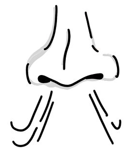

文章列表

大概在12年前接觸到表演時呼吸控制的概念，但在這之前已經知道瑜珈中的腹式呼吸。這些年來也開始思考呼吸控制的方法，特別是弦樂器演奏時的調整，我發現類似的討論在台灣比較少，個人覺得它是基礎的一部分，而且重點其實不多，不妨瞭解看看。
呼吸可以分成吸與吐，還有屏息的時候:
1. 一般吸氣與吐氣會自動調節，可以人為干預來影響，但想要維持自然狀態，大多不太需要去控制。
2. 屏息，就是撐住不吸也不吐，常常是刻意執行，會給身體帶來壓力。
關於吸氣：
-- 快速大口的吸氣會帶來興奮感，期待感，有正面的影響，許多小提琴家在開始一個段落前都會大量吸氣，當演奏時有趨於悲觀的現象時，也可以利用這樣的方式來重振自己。
-- 緩慢放長的吸氣則能鎮定精神，緩和緊張，在面臨困難時可以透過放緩呼吸來幫助自己。
關於吐氣：
-- 吐氣的量會調整吸氣的速度，吐到沒氣時就會帶來快速的吸氣。
-- 吐的量不多讓身體維持有一定程度的空氣時，比較容易維持緩慢的呼吸。
屏息：
** 一般來說都不建議屏息，畢竟會給身體帶來壓力，不利於放鬆。
** 緊張時有可能不自覺的屏息，屏息其實有一個效果是會讓心跳稍微放緩。
--結論--
我認為弦樂演奏中控制呼吸可以對演奏帶來幫助。不過實際的操作需要按照個人來調整，如果沒有老師幫忙的話，可以透過自己的觀察來實驗看看。
回上一頁